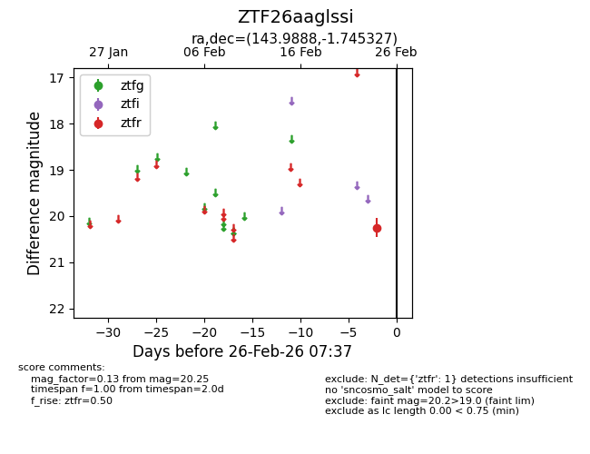
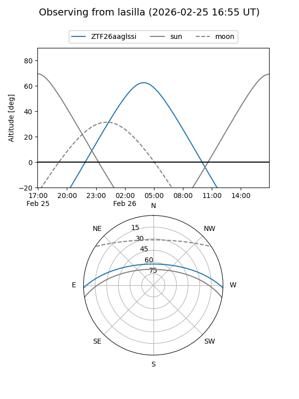
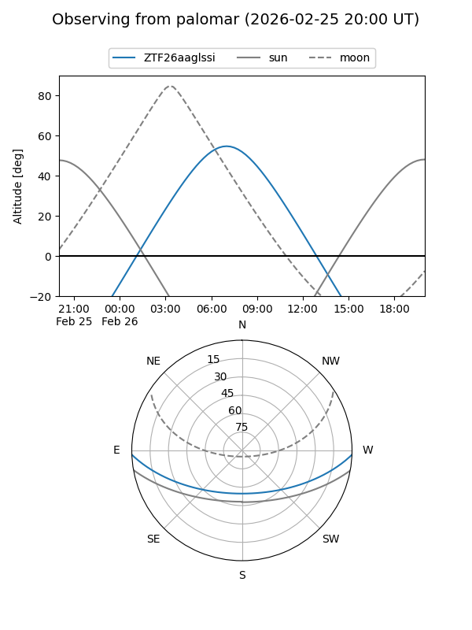

ZTF26aaglssi
Target ZTF26aaglssi at 2026-02-26 07:38
Aliases and brokers:
FINK: link
Lasair: link
ALeRCE: link
alt names
ZTF26aaglssi (ztf,fink_ztf)
Coordinates:
equatorial (ra, dec) = 143.9888,-1.74533
equatorial (HMS+DMS) = 09:35:57.30,-01:44:43.18
galactic (l, b) = (236.4021,+34.83670)
Flags:
Photometry:
last ztfr=20.25
1 ztfr detections
Lightcurve

Visibility


Additional plots